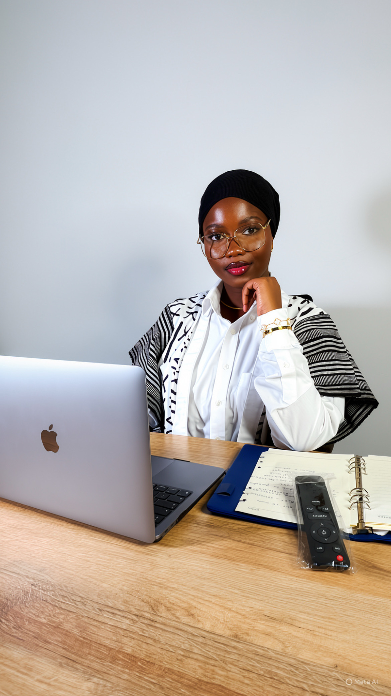
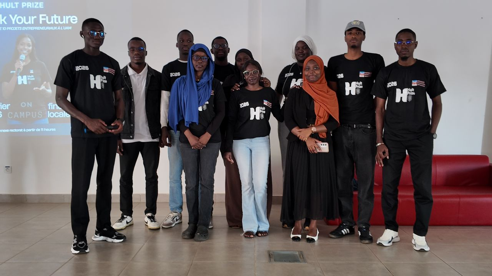
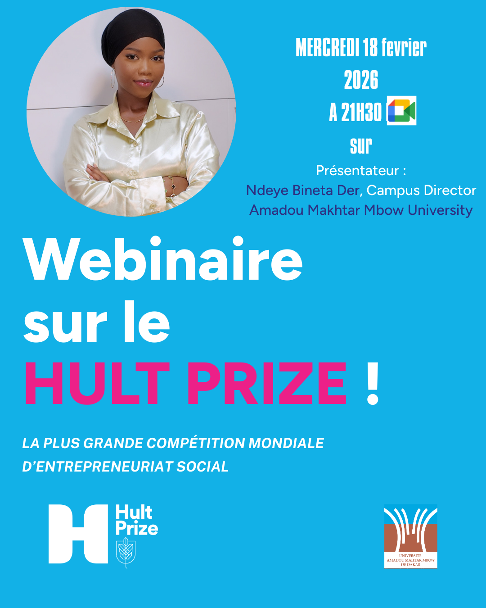
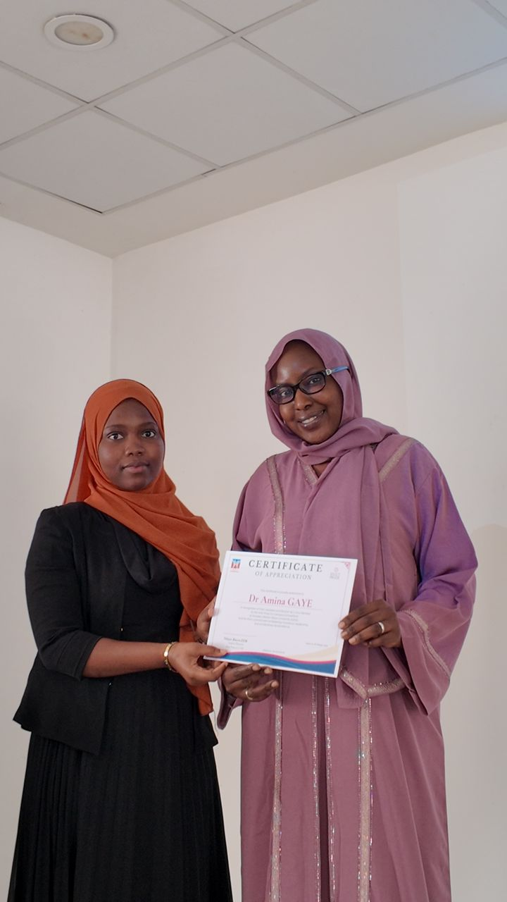

Leader en management des organisations, au service de la performance bancaire
Étudiante en Master en stratégie et management des organisations et fondatrice d'agence, Ndeye Bineta DER met la rigueur, l'analyse stratégique et le leadership au service d'une direction des opérations exigeante.

Dakar, SénégalProfil professionnel
Ndeye Bineta DER est une professionnelle du management des organisations, animée par une vision claire du leadership et de la performance institutionnelle. Étudiante en Master en stratégie et management des organisations à l'Université Amadou Makhtar Mbow, elle développe une expertise solide en gestion de projet, analyse stratégique et pilotage d'équipes — des compétences essentielles pour occuper un poste de Directeur des Opérations au sein d'une institution bancaire exigeante.
Compétences en management et en leadership
Gestion stratégique et organisation
Forte d'une double formation en licence et en master en stratégie et management, elle maîtrise l'analyse organisationnelle, la gestion de projet et la prise de décision stratégique, acquises notamment comme Chargée de la diversification.
Leadership et représentation
Présidente du Club d'Anglais de l'UAM et Campus Director du Hult Prize Sénégal, elle a démontré sa capacité à mobiliser, coordonner et représenter une institution — des qualités directement transposables à la direction des opérations.
Communication et pédagogie
Monitrice au Centre de langues de l'UAM, elle accompagne et encadre des étudiants, développant une communication claire, un sens de l'écoute et une pédagogie utiles au management d'équipe.
Stratégie digitale et créativité
Fondatrice d'une agence de marketing d'influence, elle pilote des stratégies de marque et de création de contenu, alliant rigueur analytique et sens de l'innovation.
Valeurs personnelles et professionnelles
Rigueur, écoute active et sens de l'organisation guident son approche du management. Convaincue que la performance d'une organisation repose sur l'humain, elle place l'impact social et l'innovation au cœur de sa pratique professionnelle.
Rigueur
Sens de l'organisation appliqué à chaque mission confiée.
Leadership
Mobiliser et fédérer autour d'objectifs communs.
Écoute active
Une communication qui place l'humain au centre.
Impact social
Un management orienté vers l'utilité collective.
Parcours académique
Master en stratégie et management des organisations
Licence en stratégie et management des organisations
Baccalauréat en sciences technologiques, économie et gestion
Expériences professionnelles
Ambassadrice de marque
Représentation de marque et création de contenu digital.
Monitrice
Accompagnement d'étudiants et animation de sessions pédagogiques.
Chargée de la diversification
Élaboration de stratégies de diversification et appui à la décision stratégique.
Fondatrice — agence de marketing d'influence
Stratégie de marque et création de contenu pour PME, ONG et institutions publiques.
Événements & leadership en action
En tant que Campus Director du Hult Prize à l'Université Amadou Makhtar Mbow, elle a organisé et animé la compétition entrepreneuriale « Track Your Future », de la mobilisation des participants à la remise des distinctions — une illustration concrète de ses compétences en gestion d'événement et en leadership d'équipe.



Centres d'intérêt
Passionnée d'événementiel, d'entrepreneuriat à impact social et de marketing digital, elle cultive une vision globale du management, alliant rigueur stratégique et créativité — des atouts précieux pour un Directeur des Opérations tourné vers l'innovation.